発表会情報
●日時： 2015年1月20日（火） 19:40 to 22:00
●会場： 明治大学 中野校舎（東京都中野区中野4-21-1)
6Fラウンジ
●主催： 明治大学 宮下研究室 http://miyashita.com
●概要： B4の卒業論文発表会と，B2＋M2によるデモ発表会を開催します！
B4は配属からこれまでの集大成を口頭発表で，
B2は1年間のプレ配属の成果として，M2は修士論文発表会に先立ち，
デモでこれまで行ってきた研究について熱く発表します！
どなたでも自由にご覧いただけます！（当日現地までお越しください）
●告知： facebook
●前回： homeiNTERACTION2014
プログラム
| B4卒論発表 （座長:M1 金井 達巳） | ||
| 19:40 | 藤掛 悠 | 組合せゲーム理論についてのインタラクティブシステム |
| 19:55 | ジョン ベグ | Rope Reachability: ロープを用いた画面選択の片手操作手法 |
| 20:10 | B2＋M2 デモ発表Madness （座長:M1 金井 達巳） | |
| 20:40 | デモセッション | |
|
藤掛 悠 ジョン ベグ 大島 裕樹 大家 眸美 加藤 邦拓 高橋 治輝 貫 貴裕 坂本 龍星 高井 菜々子 高橋 弘毅 中屋 裕登 宮代 理弘 矢野 秀斗 吉村 佳純 |
B4 卒業研究 誤りを含むアルゴリズムアニメーションの作成支援手法 Bezel Magic Touch : 画面枠のスワイプインを用いた携帯端末の片手親指操作手法 M2 修士研究 インタラクティブアニメーションのための分析ツール コンテクストに応じた辞典情報の可視化に関する考察 導電性インクを用いた印刷物によるインタフェース作成手法 ドラッグの操作感に影響を与えるアニメーションの研究 携帯端末の側面における二次元入力 B2 ミニプロジェクト Maid Cursor ：もう一つのカーソルを用いたポインティング支援手法の提案 飾り巻き寿司の制作支援 繰り返しパターンによるループ絵作成支援 フォントの選択を支援するインタラクティブシステム Desktop Workspace Motion Graphics の制作におけるアニメーションの発想を支援するシステムの提案とその有用性の評価 Ripple Window: PC 作業時の集中力向上を促すウィンドウ |
|
| 21:40 | クロージング |
発表内容
| 藤掛 悠 | 誤りを含むアルゴリズムアニメーションの作成支援手法 学習者の理解を促進させることを目的としたアルゴリズム及びプログラムの可視化研究は古くから行われてきた．その歴史の中で，可視化研究において最も重要なのは学習者に能動的な学習を行わせることであるとされている．能動的な学習を達成するため，これまでに，動作しているプログラムに関する問題を出すシステム，GUI上でアルゴリズムの動作をシミュレートさせるシステム，ソースコードから自動的にアニメーションを生成するシステム，実際のプログラムと異なる動きを行う誤ったアニメーションを生成するシステムといったものが開発されてきた．本研究では，Online Judgeシステムとアルゴリズムの検証プログラムを利用することによる，アルゴリズムレベルでの誤りを含むアルゴリズムアニメーションの作成を支援する手法についての検討を行う． |
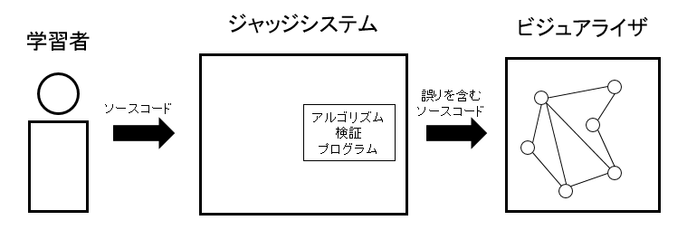 |
| ジョン ベグ | Bezel Magic Touch : 画面枠のスワイプインを用いた携帯端末の片手親指操作手法 満員電車や片手で荷物を持った時などに携帯端末の片手操作は必要不可欠な場合がある. しかし, 画面の大きさや把持姿勢によって親指が届かない場合が存在し, 使用者は把持姿勢を変える時が多くある. この時ストレスを感じる事も多くあり, 手から落下する危険も原因となる. そこで我々は, 携帯端末の片手親指操作手法であるBezel Magic Touchを示す. |
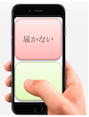 |
| 大島 裕樹 |
インタラクティブアニメーションのための分析ツール 本論文では，ユーザの操作に応じて実行されるアニメーション「インタラクティブアニメーション」を分析するツールを提案する．現在インタラクティブアニメーションは，ほとんどのソフトウェア上で実装されているものである．滑らかに推移する表現によって，インタラクティブアニメーションはユーザに気持ち良いな操作感を提供することができる．しかし適切なアニメーション表現を選ばなければ，操作の気持ち良さは損なわれ，むしろ煩わしく感じることさえある．既存の優れたインタラクティブアニメーションを模倣しようにも，その動作は見ているだけ，触れているだけでは理解が難しい．優れたアニメーション表現が周囲に溢れているにも関わらず，気持ち良い操作感を実現できていないソフトウェアは数多く存在する．提案する分析ツールは，そのままでは理解の難しいインタラクティブアニメーションをキャプチャし,フレームごとの動作を記録して定量的に分析するための情報を収集するものである．ユーザは情報を通して優れたインタラクティブアニメーションを分析し，自身のプログラム上での再現に活かすことができる．記録はユーザインタフェースやゲームコンテンツ，動画コンテンツ等を対象とし，UIアニメーションを再現したソフトウェア制作や，既存のキャラクターの動作を取り入れたゲーム制作，コンテンツ内に登場する架空インタフェースの再現なども支援する．本論文では実際にインタラクティブアニメーションの分析を行い，ツールを用いた分析の有用性を示した．また，分析ツールがインタラクティブアニメーションの認知および再現に貢献しているかについても，実験を行い有用性を示した． |
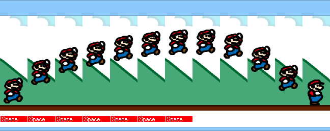 |
| 大家 眸美 | コンテクストに応じた辞典情報の可視化に関する考察 未知語の意味を調べるアプローチの一つに言語辞典がある．辞典での未知語調査のメリットはその 情報量の豊富さにある．通常，言語辞典は，情報を静的順序で羅列して出力する．そのため，従来の辞典 を用いて，複数の概念が定義されている語句を調べる場合には，求める答えへのアクセスが困難になる可 能性がある．本稿の目的は，言語辞典に対し，静的であった情報提示を動的に変更可能にし，豊富な情報 量を維持したまま，求める情報へのアクセシビリティを高めることである．本稿では特に，日本人ユーザ による L2 言語の検索に対象を限定し，英和辞典の機能拡張を施す．具体的には，検索語句に定義されてい る概念群を，文中で用いられている意味である可能性の高い順序に並び替えて出力する．このコンセプト の実現のため，辞典アプリケーション RerankDic をウェブ上に実装する． |
|
| 加藤 邦拓 | 導電性インクを用いた印刷物によるインタフェース作成手法 本研究では，導電性インクを用いた印刷物によるインタフェース作成手法を提案する． 今日，静電容量式のタッチパネルを搭載したデバイスが広く普及しており，ユーザは画面内に配置されたインタフェースを直接手で触れて操作することが可能となった． その一方で，こうしたタッチパネル上に物理的なインタフェースを用いたインタラクションに関する研究が多くなされている． 本研究で提案する手法では，家庭用のインクジェットプリンタから印刷するだけでこうしたタッチパネル上で使用可能なインタフェースの作成が可能となる． また本研究では，タッチパネル上でマルチタッチを発生させるカードインタフェースと，スクロール操作のような連続的な入力を実現し様々な形にインタフェースを拡張可能なシートの二種類を提案し，それらを用いたインタラクションについて述べる． |
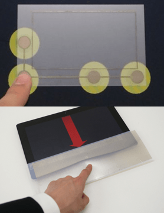 |
| 高橋 治輝 | ドラッグの操作感に影響を与えるアニメーションの研究 視覚情報によって触覚的な感覚を提示する擬似触覚フィードバックの研究が盛んに行われている．擬似触覚フィードバックでは，操作対象となる画面上のオブジェクトの動きにノイズのような動きを付与し，ユーザ自身が感じる体の動きと画面上のオブジェクトの挙動との間に矛盾を生むことによって実現される．本研究では，ユーザの操作をリプレイするように追従するアニメーションを付与することによって，オブジェクトのドラッグ時の操作感に影響を与える手法を提案する．このアニメーションは，ユーザの操作した軌跡上をユーザの操作とは異なる速度で追いかける．これによりユーザが操作するカーソルとディスプレイとのC/D比の変化や，オブジェクトの移動速度・サイズの変更など疑似触覚フィードバックで用いられる方法を使用せず，付与されるアニメーションに触覚提示の役割を担わせることが可能であるかを検討する． |
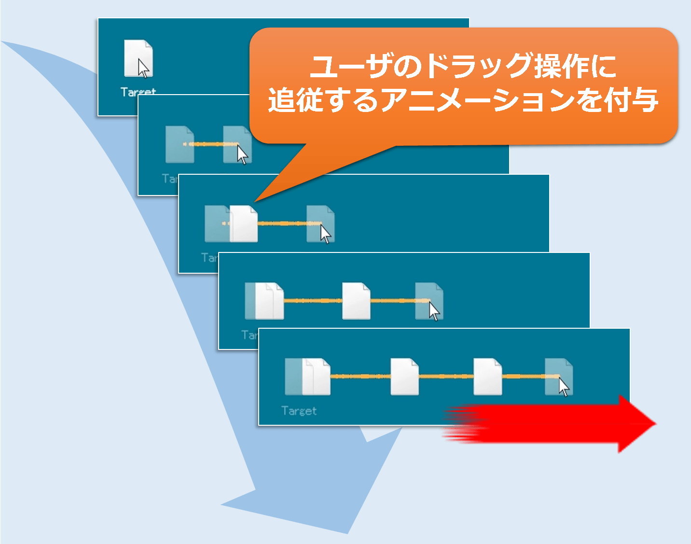 |
| 貫 貴裕 | 携帯端末の側面における二次元入力 近年の携帯端末では，物理ボタンが排除され，タッチパネルを用いての操作が多くなっている．タッチパネルを採用することにより，操作領域が増え，指を滑らせることによるジェスチャ操作が可能になり，多機能な入力が可能となった．しかし，端末は大きくなり，手の大きさによっては片手での操作が難しくなっている．本論文では，スマートフォン側面に入力デバイスを取り付ける入力領域の拡張を提案する．これにより，持ち手での操作を可能になり，両手を組み合わせた入力が可能になる．大きな領域に対するブラウジングを想定し，実験システムを実装，実験を行うことで有用性を示す． |
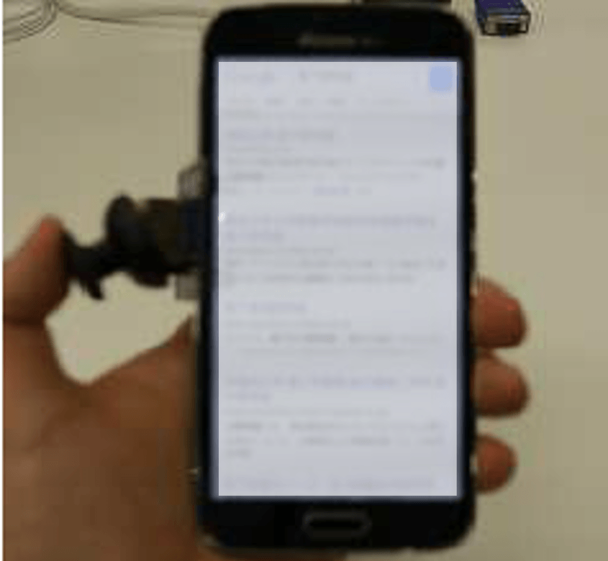 |
| 坂本 龍星 | Maid Cursor ：もう一つのカーソルを用いたポインティング支援手法の提案 本稿では, マウスによるポインティング支援においてユーザーが操作しているマウスへアクションを行うのではなく, 別のオブジェクトを生成し,そのオブジェクトに対してアクションを行う. 今回提案する手法では, ターゲットになるオブジェクトに優先度を持たせ, 探索範囲に入ってきた最も優先度が高いオブジェクトをターゲットとし, 生成したオブジェクトをターゲット先へと移動させた後, ユーザーの任意で決定を行う. これによりユーザーの意図しない動作を防ぎ, 人とコンピュータのバランスの取れた効率の良いポインティング手法を提案する. |
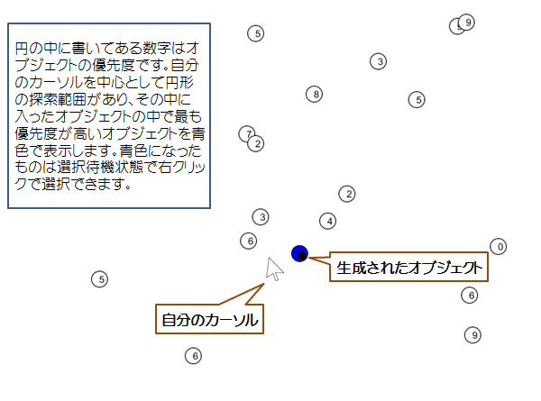 |
| 高井 菜々子 | 飾り巻き寿司の制作支援 近年，断面に家紋などの伝統的図案やキャラクターのデザインをあしらった「飾り巻き寿司」が流行している．しかし独自に図案を考えて作ることは難しい．そこで，入力された具材の配置から最適な巻き方を提案するシステムを実装した． |
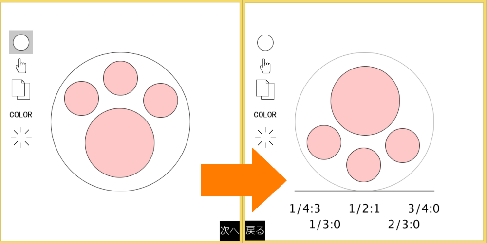 |
| 高橋 弘毅 | 繰り返しパターンによるループ絵作成支援 包装紙のデザインや web サイトの背景など繰り返し並べることのできるイラストというのは身近に あふれている．本稿では，繰り返し並べることのできるイラストを簡単に描くことができるシステムを 提案する． |
|
| 中屋 裕登 | フォントの選択を支援するインタラクティブシステム 私達が文字を扱う機会は多く，コンピュータ上で書類や文書,ポスターを制作する際には， そのフォントが重要となる． しかしながら，フォントの選択方法はフォント名が羅列されたドロップダウンメニュー方 式が多く， ユーザは自分の求めているフォントにたどり着くことは容易ではない． 本稿では，ユーザが理想とするフォントを選びやすいシステムを提案し，その有用性を確か める実験を行った． |
 |
| 宮代 理弘 | Desktop Workspace 現在のデスクトップ環境はデスクトップメタファを基底にしており,現実世界での動作とコンピュータ上での操作が直感的に類似している.それらを踏まえると,現在のカットやペーストという概念は現実世界での切り貼りとは全く異なり,コンピュータ上のみの概念となっている.また,現実世界での切り貼りと類似する動作として,コンピュータ上でのファイルの分割・結合が考えられるが,これらの動作は需要がありつつも外部のアプリケーションを利用しなければ実行できない.コンピュータ上でのファイルの分割・結合は,現実世界での切り貼りと同様に外部のアプリケーションを用いずにデスクトップ環境上で処理できることが望ましい.本稿では,より直感的に簡易なファイル処理を行うことを目的としたシステムを提案する. |
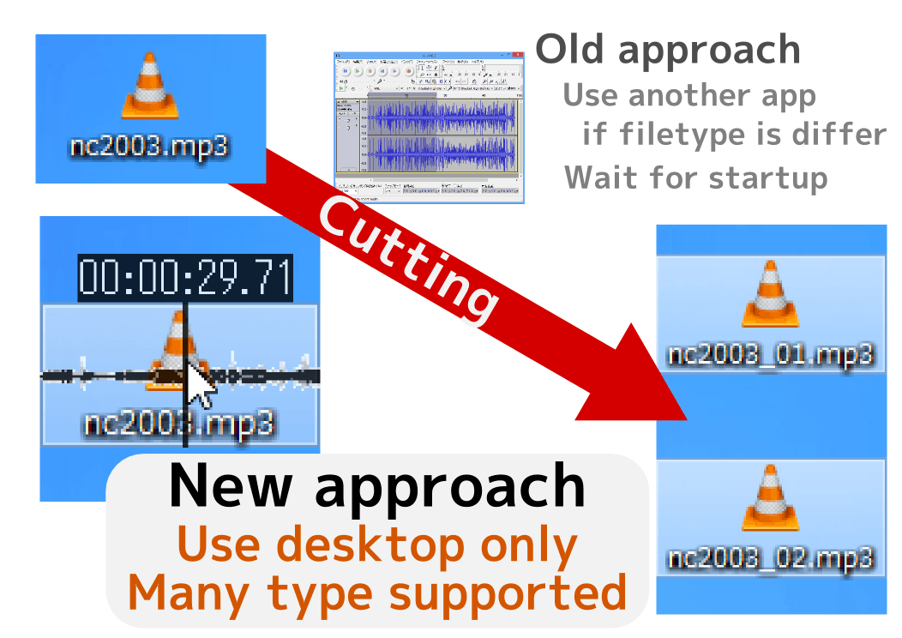 |
| 矢野 秀斗 | Motion Graphics の制作におけるアニメーションの発想を支援するシステムの提案とその有用性の評価 今日，動画共有サイトや映像編集ソフトの普及，コンピュータの高性能化などにより，手軽に映 像制作ができるようになっている．ニコニコ動画や YouTube では CGM,UGC の Motion Graphics が よく見られる．しかし Motion Graphics の制作にはセンスや発想力が必要であり，満足に制作ができ ていない人もいる．本稿では万人が満足して Motion Graphics を制作できるようにアニメーションの 発想を支援するシステムを提案し，アンケートによってその有用性の評価を行った． |
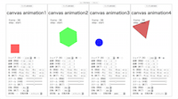 |
| 吉村 佳純 | Ripple Window: PC作業時の集中力向上を促すウィンドウ 本稿では，内向きに向かう縞模様をウィンドウ枠に表示することによってウィンドウ内への視線誘導を行い，特定のタスクへの集中を促すシステムを提案する．実験では，本システム有用性の実証と，有効なウィンドウ枠の太さを調べる実験を行った．その結果，本システムは作業エリアへの視線誘導と集中力の向上に有効であり，ウィンドウ枠の太さは，縞模様の動きが分かる状態であれば，1本分しか見えない太さでも有効であることが分かった． |
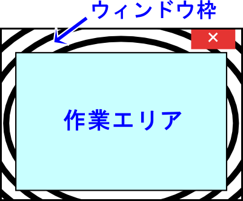 |
●Let's tweet!: Tweet 公式ハッシュタグ：#homeiNTERACTION